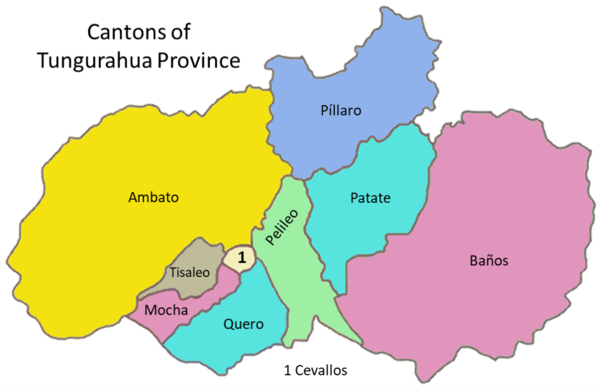
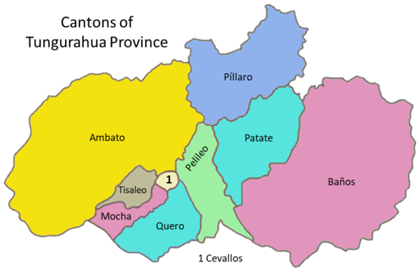
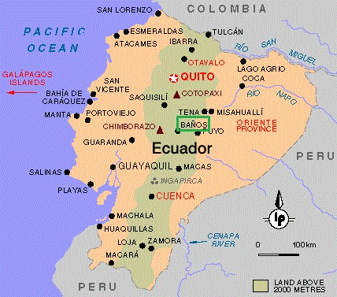

Location
Baños de Agua Santa is a city in Ecuador's Tungurahua province. Baños is located at an elevation of 1,820 metres (5,971 feet). Commonly know for its many touristic place, this city is one of the most visited by people from other countries, this is why Baños offers, night light, delicious food, fine places, extreme sports, nice places for fotos, and all kinds of souvenirs, etc. One of the treasures of Ecuador!
 

Maps & Roads
In the first image we can see where Baños is in comparison with the other provinces. If you are an Ecuadorian you can guide with this image by seeing where your province is and in what direction you should go (North, south, east or west). As a traveler you may want to get to the international airport of Quito, from Quito to Baños you can have a road trip of 2 hours (3 hours and a half, if there is traffic), more or less (in car) or you can travel by bus making a time of 3 hours and half (4 hours and half, with traffic). In the second images you can see the best route from Quito (Airport) to Baños.
